SeaStock help
SeaStock shows the paint and thinners on board every vessel, how much has been used, and what arrived. The crew records stock on the vessel’s tablet; each time the tablet syncs, the numbers here update. This guide walks through every screen, what each part shows and what each button does.
This guide was made from the preview version of SeaStock, which runs on sample data. Changes you make in the preview are kept until you close the browser tab.
How to read this guide
- Each screenshot has numbered boxes. The list under it explains each number.
- Point at an explanation to light up its box on the screenshot, or click a box to jump to its explanation.
- Screens look a little different depending on your role. Where they do, this guide says so.
Roles
PPG Admin
PPG staff. With access to all customers, a PPG Admin sees everything and looks after customers, vessels, users and products. A PPG Admin can instead be limited to some regions or some customers (for example the sales team); they see only those customers and cannot change the setup.
Customer Admin
A shipping company’s Fleet Manager or Procurement. Sees only their own company’s vessels and can add and edit their own company’s users.
Ship Admin
The Chief Officer of a vessel. Records stock on the vessel’s tablet and, on the website, sees only their own vessel.
Words used in SeaStock
- Sea Stock
- The paint and thinners on board a vessel.
- Sync
- When the vessel’s tablet sends what the crew recorded. Vessels usually sync every 1 to 3 days; numbers on the website are as of each vessel’s last sync.
- Can and liters
- Stock is counted in cans. Liters are worked out from the number of cans and the liters in each can.
- Component type
- Base or Hardener for two-component paint (2K), or 1K for one-component products, which includes thinners.
- Article number
- PPG’s six-digit item number, printed on the label and on the delivery note.
- Delivery note
- The paper that comes with a delivery, listing what was sent. The crew scans it, then scans the cans going into the locker.
- Consumption
- Cans taken out of the locker for a job. A can that leaves the locker counts as fully used, even if some paint comes back.
Sign in
Sign in with your work e-mail and password. Where you land depends on your role: PPG Admins and Customer Admins open on the Overview, Ship Admins open on their vessel’s Sea Stock. If you open any page while signed out, you are asked to sign in first and then taken back to that page.
- 1Your work e-mail, the one your administrator registered for you.
- 2Your password.
- 3Sign in checks your e-mail and password and opens SeaStock.
- 4Forgot password? lets you ask for a link to choose a new password.
- 5Preview version only: Reset sample data puts all sample data back to how it started, undoing any changes made in the preview.
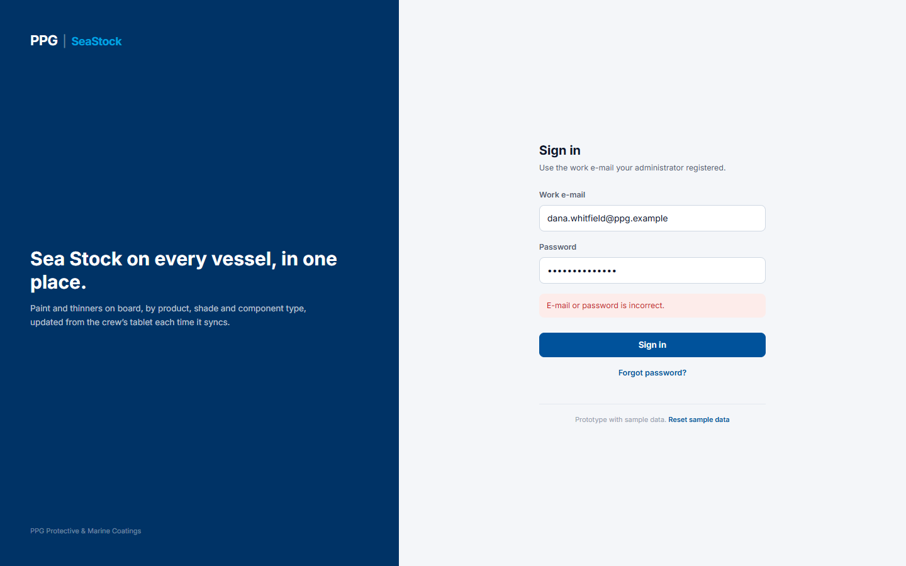
1- 1A red message says what went wrong. E-mail or password is incorrect: check both and try again. This account is disabled: ask your administrator to turn it back on. This account is not set up yet: open your invite e-mail and set your password first. Enter your e-mail and password: one of the boxes is empty.
- 1Type your work e-mail.
- 2Send reset link asks for a link to choose a new password.
- 3Back to sign in returns to the sign-in page.
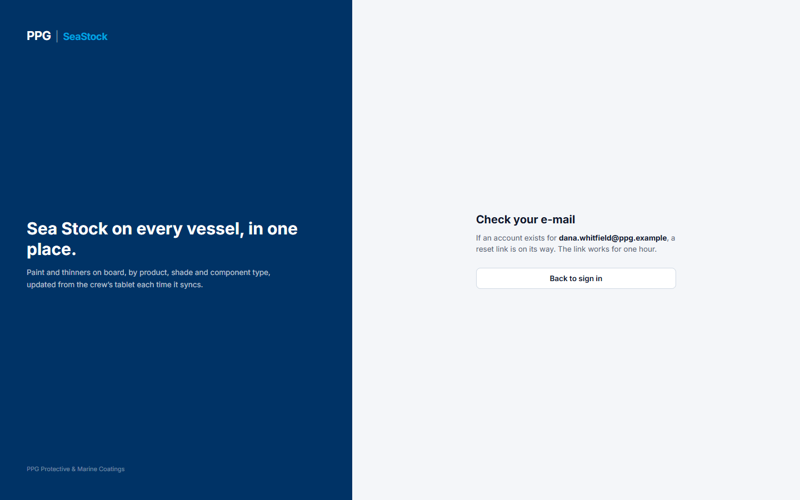
1- 1SeaStock confirms that, if an account exists for that e-mail, a link is on its way; the link works for one hour. Back to sign in returns to the sign-in page. In the preview version no e-mail is actually sent.
Overview
The first page for PPG Admins and Customer Admins. It shows the headline numbers for everything you can see, and the things that need someone’s attention. Ship Admins do not have this page; they open straight on their vessel.
- 1Scope card: what you can see. “All regions” means every customer. A limited PPG Admin sees their region or customers here, a Customer Admin their company, a Ship Admin their vessel.
- 2Menu: the pages you can open. The Administration part appears only for roles that manage the setup: Customers & vessels and Products for a PPG Admin with all customers, Users for a PPG Admin with all customers and for a Customer Admin.
- 3Your name and role. The arrow on the right signs you out and returns to the sign-in page.
- 4The page title, with your role and what you can see.
- 5Summary tiles, left to right: number of customers (shown only when you can see more than one); number of vessels; total Sea Stock in liters and cans; liters and cans used in the last 30 days; vessels with a late sync or no sync; and items that need review. Tiles with an arrow open the matching page: Vessels and Sea Stock open Sea Stock, Consumed opens Consumption. A number in orange means something needs attention.
- 6Late or no sync: vessels whose tablet has not synced for more than 3 days, or never. Their numbers may be out of date. Each row shows the vessel and its company, its tablet, whether the opening stock count has been done, and when it last synced. Click a vessel name to see its stock.
- 7Negative stock: products where more cans were scanned out than the vessel has on record, which cannot be right. It usually means a delivery was not scanned in, a can was missed in the opening count, or a can was scanned out twice. The crew corrects it with a stock adjustment on the tablet. Click a vessel name to see its stock.
- 8Unrecognised scans: cans the crew scanned whose label did not match any product on the master item list, for example because the article number was misread or the product is new. They are held aside and not counted in Sea Stock until they are matched. Each row shows the vessel and who scanned it, whether it was a receipt or consumption, what was read from the label, the number of cans and when.
- 9Match to article opens a pop-up to say which product the scan really was (see below). Only a PPG Admin with all customers can do this; others see “PPG admin to match”.
- 10Recent activity: the latest things recorded on board, newest first. Each line shows the type (Receipt, Consumption, Adjustment or Baseline), the change in cans and the product, the vessel and time, and the change in liters. All activity opens the Activity page.
- 1The scope card shows your company.
- 2The menu has Users under Administration, to manage your own company’s people.
- 3There is no Customers tile, because you see one company. All numbers and lists cover only your company’s vessels.
- 1The scope card shows the region (or the customers) this person can see. Every number and list covers only those customers.
- 2There is no Administration part in the menu: a limited PPG Admin views and exports, but does not change customers, users or products.
Pop-ups on this screen
Match to article
- 1What the tablet read from the label, and how many cans.
- 2When the product name and shade match a product on the list, SeaStock suggests it: here the article number was most likely misread.
- 3Choose the product the cans really are. Only active products are listed. If it is not there, add it on the Products page first (the link under the list goes there).
- 4Match and post saves the match: the scan leaves the review list and is counted in the vessel’s Sea Stock, as a receipt (cans added) or consumption (cans taken off), as it was scanned. It then shows on the Activity page with who matched it. Cancel closes without changing anything.
Sea Stock
What is on board right now, as of each vessel’s last sync. You can look at it by product, or roll it up by vessel, customer or region, and download it.
- 1Filters. Region, Customer and Vessel narrow down which vessels are counted; each one appears only when you can choose between more than one. Component type shows only Base, Hardener or 1K products. Search finds products by article number, product name or shade.
- 2Export summary downloads the table you are looking at as a CSV file, which opens in Excel.
- 3Export detail downloads one row for every product on every vessel shown, with region, customer, vessel, IMO number, product details, cans, liters and last sync, so you can build your own totals.
- 4Group by: By product, By vessel, By customer, By region. Customer Admins see By product and By vessel; Ship Admins see their vessel by product only.
- 5Totals for what is shown: number of vessels, cans and liters.
- 6One row per product: article number, product, shade (a dash when the label has none, as for hardeners and thinners), component type, pack size, how many vessels have it, cans and liters. A negative number shows in red and means the record needs correcting (see Negative stock on the Overview).
- 7The total of all rows.
- 1Each vessel with its company. Click the vessel name to see that vessel on its own, with its details.
- 2When the vessel last synced. Orange means more than 3 days ago, so its stock may be out of date; “Never synced” means its tablet has not sent anything yet.
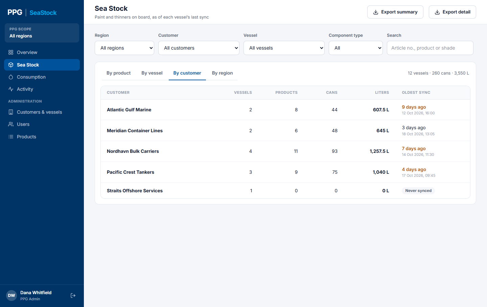
1- 1One row per customer, with how many vessels, products, cans and liters. Oldest sync is the vessel of that customer that synced longest ago, so you can tell how fresh the total is.
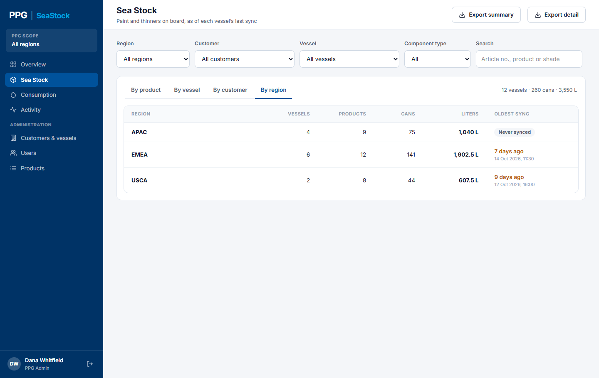
1- 1One row per PPG sales region (APAC, EMEA, USCA), with the same columns as by customer.
- 1Vessel details: the vessel’s name, IMO number and vessel ID; its customer and customer ID; its region; its tablet (ID, Android or iOS, app version); the date of its opening stock count; and its last sync. The line underneath reminds you that anything recorded since the last sync shows after the next one.
- 2Consumption → and Activity → open those pages already filtered to this vessel.
- 3When the vessel last synced.
- 4The stock on this vessel, product by product, with the total underneath.
- 1A Ship Admin’s menu has Sea Stock, Consumption and Activity, all for their own vessel only.
- 2Their vessel’s details and stock open straight away. There are no region, customer or vessel filters.
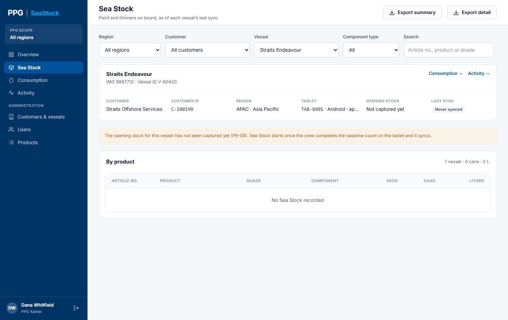
1- 1A new vessel starts with an opening count of everything already in its locker, done on the tablet. Until that count is synced, the vessel shows no stock and this message appears.
Consumption
How much paint and thinner was taken from the lockers in a period, rolled up the way you need. A can that leaves the locker counts as fully used; cans put back are not scanned.
- 1Period: Last 30 days, this month, last month, or Custom dates.
- 2Filters: Region, Customer and Vessel, shown when you can choose between more than one.
- 3Export summary downloads the table you are looking at (name, scans, cans, liters) as a CSV file.
- 4Export detail downloads every consumption scan in the period: date, customer, vessel, vessel ID, product details, cans and liters.
- 5Group by: By product, By vessel, By customer, By region. Customer Admins see By product and By vessel; Ship Admins by product only.
- 6The dates covered and the total cans and liters used.
- 7One row per product (or vessel, customer or region), most liters first. Scans is how many times cans were scanned out; one scan can cover several cans.
- 8The bar shows each row’s liters compared with the biggest row, so the main users stand out.
- 9A reminder of how consumption is counted.
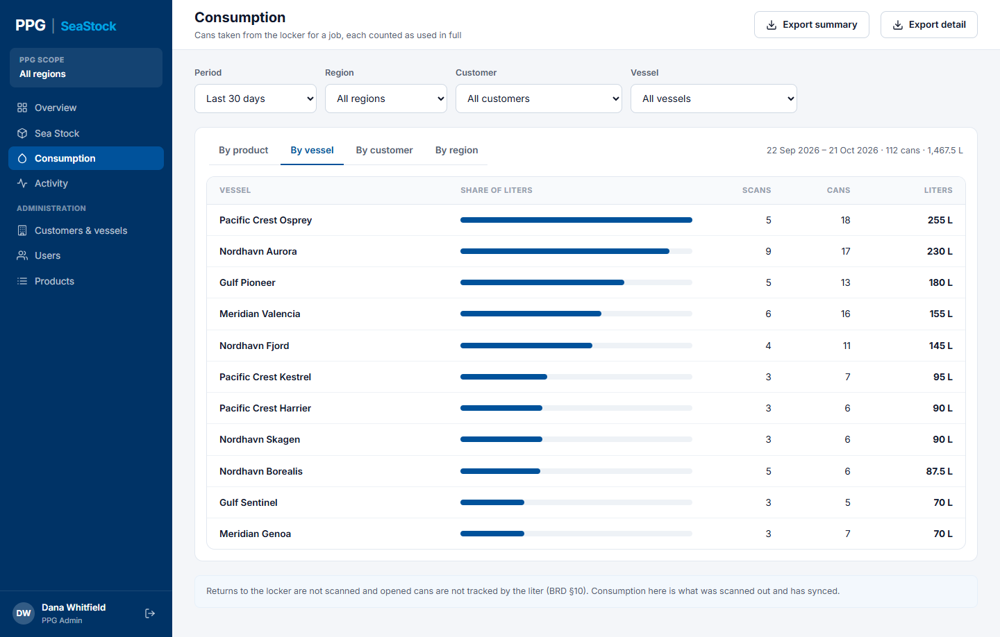
1- 1One row per vessel, so you can see which vessels use the most.
- 1With Custom dates chosen in Period, pick the first day here…
- 2…and the last day here. Both days are included.
Activity
Everything recorded on board, with who did it, when, on which tablet and how. It has two tabs: Transactions and Delivery notes.
- 1Switch between Transactions (every change to stock) and Delivery notes (each delivery and how it tallied).
- 2Filters: Period; Region, Customer and Vessel; Type (Receipt, Consumption, Adjustment or Baseline); and Source (DN scan, Label scan or Manual adjustment).
- 3Export CSV downloads the rows shown, with all their details.
- 4How many rows match. All times are in UTC.
- 5When the crew recorded it on the tablet, and underneath when it reached SeaStock.
- 6The type. Receipt: cans put into the locker from a delivery. Consumption: cans taken out. Adjustment: a correction the crew made on the tablet, with a reason. Baseline: the opening count when the vessel started using SeaStock.
- 7The product, with its shade, article number, component type and pack size.
- 8The change: cans added in green, cans taken out in orange, and the liters.
- 9Who recorded it and on which tablet.
- 10How it was recorded: DN scan (from a delivery note; click the number to open it), Label scan, or Manual adjustment. Any reason the crew gave is shown underneath.
- 1Besides Period and the region, customer and vessel filters: Tally (All, All matched, or With differences) and Search by delivery note number or customer reference.
- 2The delivery note number and its date. Click it to open the delivery note.
- 3How the delivery tallied: All matched when everything on the note was received, or the number of lines that differed.
- 4When the crew confirmed the delivery on the tablet, and who did it. The other columns show the vessel, the customer’s order reference, the number of lines and the cans put into the locker.
Pop-ups on this screen
Delivery note
- 1Header, as read from the delivery note: its number and date, the vessel’s IMO number and name, the customer and their order reference; who received it, when it was confirmed on the tablet and when it synced; the number of lines, the cans put into the locker and how many lines differed.
- 2Tally: each line on the note against what was scanned into the locker: the product, the quantity on the note, the quantity received, the difference and the liters received.
- 3The result of each line. Matched: as on the note. Short: fewer received. Over: more received. Not on note: received but not listed. Not received: listed but not delivered.
- 4The reason the crew gave for a difference. The crew sorts out differences on the tablet before confirming; this shows what they decided. Close returns to the list.
Customers & vessels
Who PPG supplies, their vessels, and the PPG sales region each customer belongs to. Only PPG Admins with access to all customers have this page. Changes show straight away on every page.
- 1Tabs: Customers, Vessels and Regions.
- 2Add customer opens a pop-up to add a new customer.
- 3Filter by Region, or search by name or customer ID.
- 4Each customer with its customer ID, region, number of vessels, number of users (company users and Chief Officers), whether it is Active or Inactive, and when it was added.
- 5Edit opens the same pop-up to change a customer.
- 1Add vessel opens a pop-up to add a new vessel.
- 2Filter by Region or Customer, or search by vessel name, vessel ID or IMO number.
- 3The vessel’s tablet: its ID, Android or iOS, and app version. Each vessel has one tablet.
- 4The date of the vessel’s opening stock count, or Not captured if it has not been done.
- 5When the tablet last synced; orange if more than 3 days ago. Each row also has the vessel name (click it to see its stock), IMO number, vessel ID, customer and an Edit button.
- 6A note on how tablets are supplied.
- 1The PPG sales regions, with how many customers, vessels and region-limited PPG Admins each has.
- 2Edit changes a region’s name. Region codes stay the same.
Pop-ups on this screen
Add customer
- 1The customer’s name.
- 2The customer ID used in PPG’s own systems.
- 3The PPG sales region the customer belongs to. It decides which region-limited PPG Admins can see it.
- 4Add customer saves it; the button works once all three are filled in. Cancel closes without saving.
Edit customer
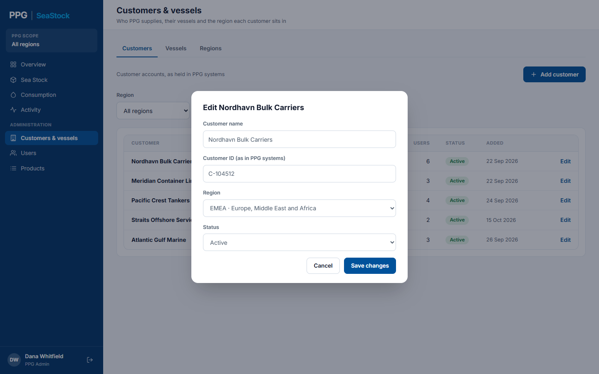
1- 1The same fields, plus Status: Active or Inactive. Save changes saves.
Add vessel
- 1The vessel’s name.
- 2The vessel ID used in PPG’s own systems.
- 3The vessel’s IMO number: 7 digits, numbers only. A red message shows until it has 7 digits. Delivery notes are matched to the vessel by IMO number first, then by name.
- 4The customer the vessel belongs to. Add vessel saves once everything is filled in correctly. A new vessel starts with no tablet, no opening stock and no sync. Edit on a vessel opens the same pop-up.
Edit region
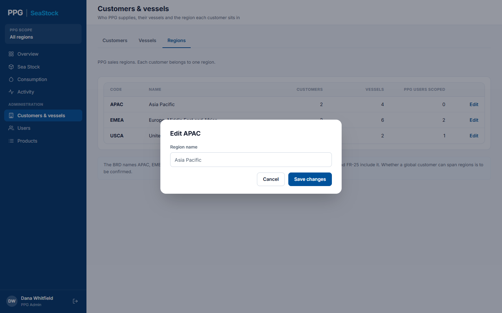
1- 1The region’s name. Save changes saves it.
Users
Who can use SeaStock, their role, what they can see, and whether they can sign in. PPG Admins with all customers see everyone; Customer Admins see and manage only their own company’s people.
- 1Tabs: Users and Roles & permissions.
- 2Add user opens a pop-up to add someone and send them an invite.
- 3Filter by Role or Status, or search by name or e-mail.
- 4The user’s role, with their job title underneath.
- 5What the user can see: all regions, a region, chosen customers, their company or their vessel.
- 6Active: can sign in. Invited: has not set up their account yet. Disabled: cannot sign in. Each row also shows the level (PPG, Customer or Vessel), the last sign-in and an Edit button.
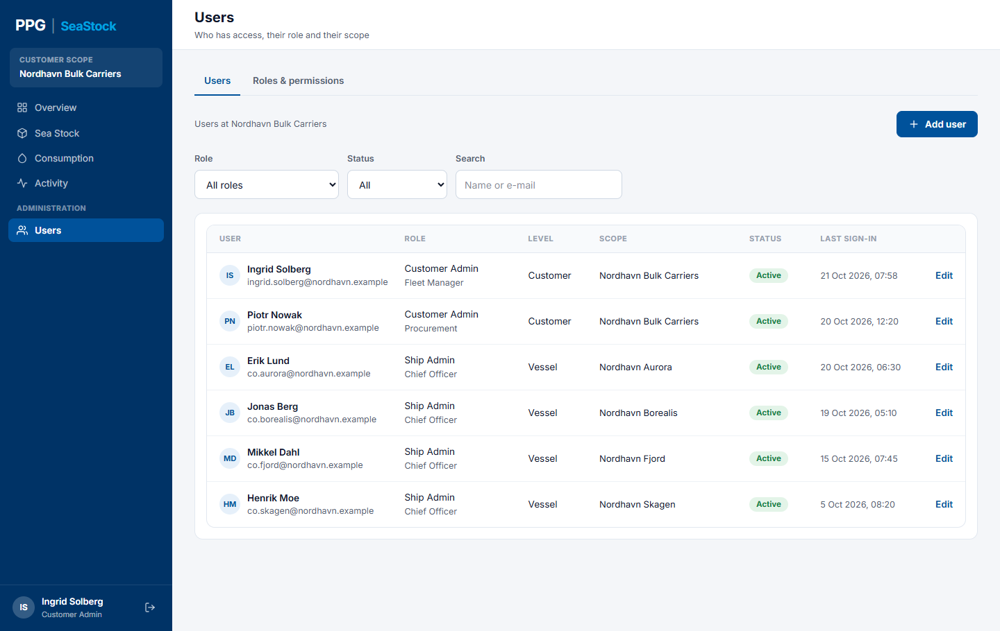
1- 1Only your own company’s people. When you add someone, you can make them a Customer Admin or a Ship Admin for one of your vessels.
- 1The three roles: who holds each one, what they see, and how many people have it.
- 2What each role can do. A tick means yes. The PPG Admin has two columns: one with all customers, one limited to some regions or customers.
Pop-ups on this screen
Add user: PPG Admin
- 1The person’s full name, job title (for example Chief Officer) and work e-mail. They sign in with this e-mail.
- 2The role: PPG Admin, Customer Admin or Ship Admin. The boxes below change with the role.
- 3For a PPG Admin, what they can see: All customers (they also look after the setup), Whole regions or Specific customers (for example the sales team; view only).
- 4Tick the regions (or customers) they can see.
- 5Add and send invite adds them as Invited; it works once every box is filled in. They can sign in after setting up their account from the invite.
Add user: Customer Admin
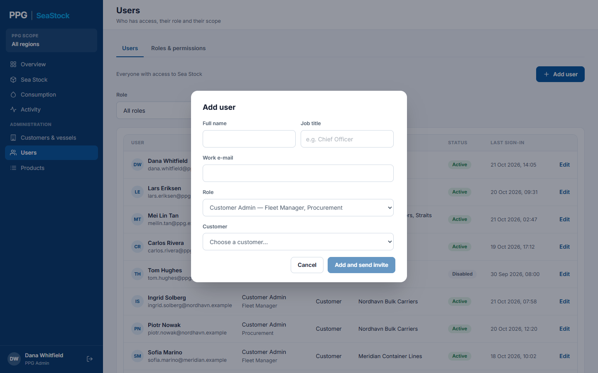
1- 1The company they belong to. For a Customer Admin adding someone, this is fixed to their own company.
Add user: Ship Admin
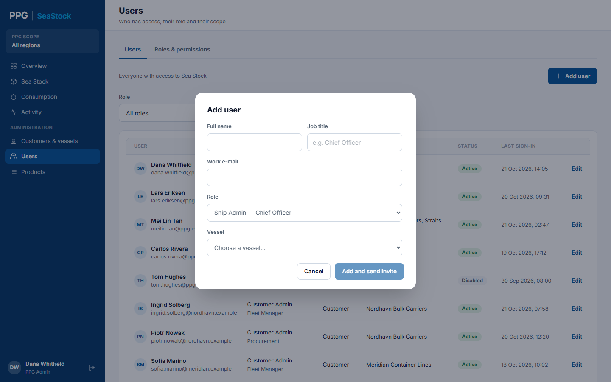
1- 1The vessel they look after. A Customer Admin can pick only their own company’s vessels.
Edit user
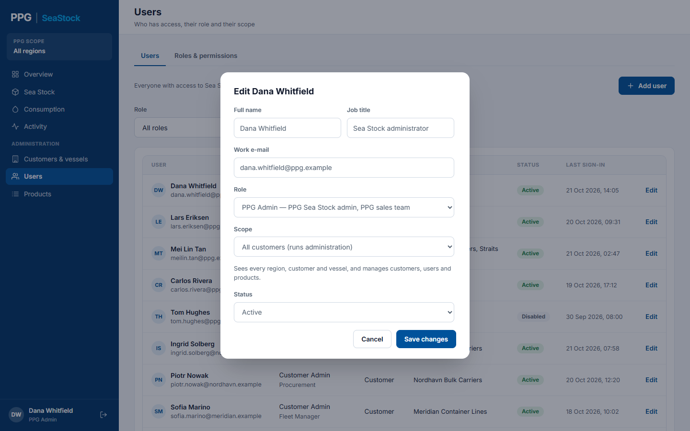
1- 1The same boxes, plus Status. Set Disabled to stop someone signing in; set Active to let them back in. Save changes saves.
Products
The PPG products SeaStock recognises, and how the tablet reads can labels. Only PPG Admins with access to all customers have this page.
- 1Tabs: Master item list and Label schema.
- 2Bulk load opens a pop-up to add many products at once from PPG’s list.
- 3Add item opens a pop-up to add one product.
- 4Filter by Component type and Status (Active, Retired or All), or search by article number, product or shade. Only active products show at first.
- 5Base, Hardener or 1K.
- 6Pack size as printed on the can, and Unit volume, the liters in each can, which SeaStock uses to turn cans into liters. Each row also shows the article number, product, shade and status.
- 7Retire takes a product off the list for new scans (it asks first). On a retired product, Restore brings it back.
- 1The version the tablets use now, when it was published and by whom.
- 2Publish makes your changes the next version, used by every tablet. Discard throws your changes away. Both work only when there are changes.
- 3The details the tablet reads from each can label: whether each one must always be there, what it is used for, and the rule it must follow. Edit changes a field’s rules.
- 4How the component type is decided: one-component products, including thinners, are 1K; two-component products are Base or Hardener, as printed on the label.
- 5How a scanned can is matched to a product: by article number first; if that cannot be read, by product name and shade; if neither matches, the scan is held for review on the Overview.
Pop-ups on this screen
Add item
- 1The six-digit article number. A red message shows if it is already on the list. Next to it, the pack size in liters; above the product type you also enter the product name and the shade (left empty for hardeners and thinners).
- 2Product type: one component (1K) or two components (2K).
- 3Component type: set to 1K automatically for a 1K product; for a 2K product choose Base or Hardener. Add item works once everything is filled in correctly.
Bulk load
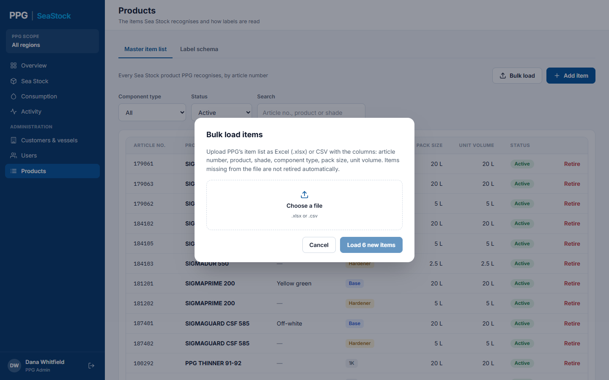
1- 1Choose PPG’s product list as an Excel (.xlsx) or CSV file, with the columns article number, product, shade, component type, pack size and unit volume.
Bulk load: check before loading
- 1What the file would do: how many products are new, how many are already on the list, and how many rows have errors and will be skipped, with the reason. Products missing from the file are not retired.
- 2Load … new items adds the new products. In the preview version the file’s contents are a fixed sample.
Retire item
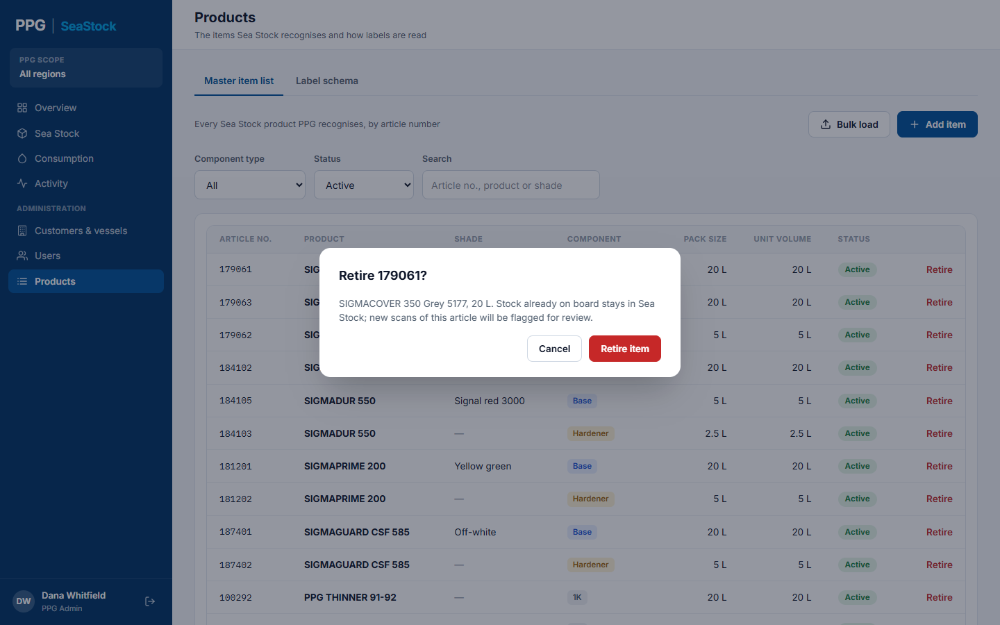
1- 1Retire item confirms. Cans already on board stay in Sea Stock; new scans of this product are held for review. Cancel keeps it active.
Edit a label field
- 1Required: Always, Where present, or Base and 1K only.
- 2Rule: what the value must look like. Save to draft keeps the change without sending it to tablets yet.
Unpublished changes
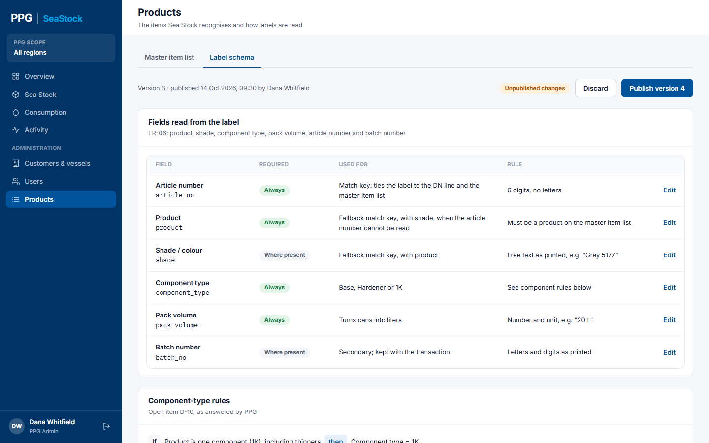
1- 1Unpublished changes means your edits are not on the tablets yet. Click Publish version … to send them, or Discard to throw them away.